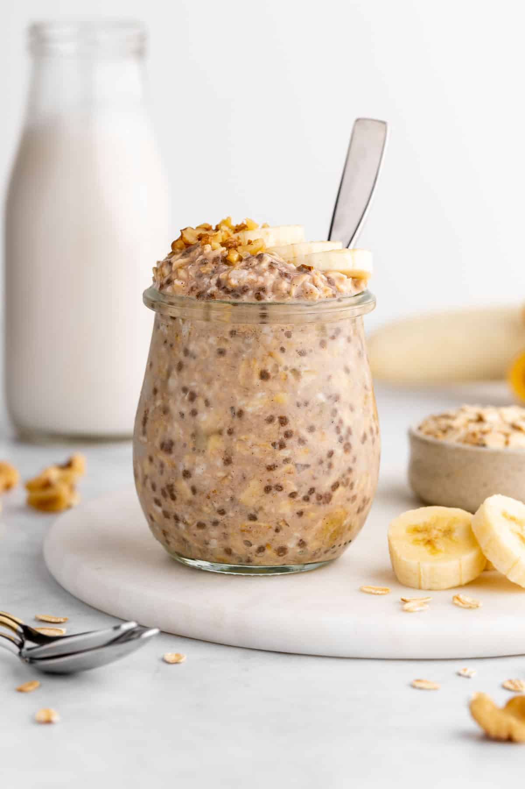

Overnight Oats

Description
This dish is a nutritious delight, covering all macronutrient needs while packing enough flavour so you'll never get bored of it.
You can modify it with various different toppings or change up the protein powder flavour to suit your specific taste buds!
Ingredients
- 50g of Rolled Oats
- 1 tsp of Crunchy Peanut Butter
- 1 tbsp of Chia Seeds
- 70g of Greek Yoghurt
- 150ml of Almond/Oat Milk
- 1/2 a scoop of Vanilla Whey Protein Powder
- 1 tsp of Cocoa Powder
- Maple Syrup or Honey - As you wish
Steps
- Weigh out 50g of Rolled Oats and add to a large bowl
- Measure out 150 ml of Almond Milk and weigh out 70g of Greek Yoghurt and add both to the bowl
- Mix all of the ingredients together
- Add the Chia Seeds, Cocoa Powder and Protein Powder
- Mix all the ingredients together once again
- Sprinkle the Maple Syrup or Honey on top (at your own preference) and give it one last mix
- Store it in the fridge overnight (obviously) and it'll be ready to eat once it's sat in the fridge for 6 or more hours